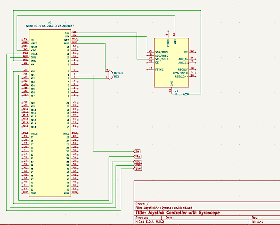
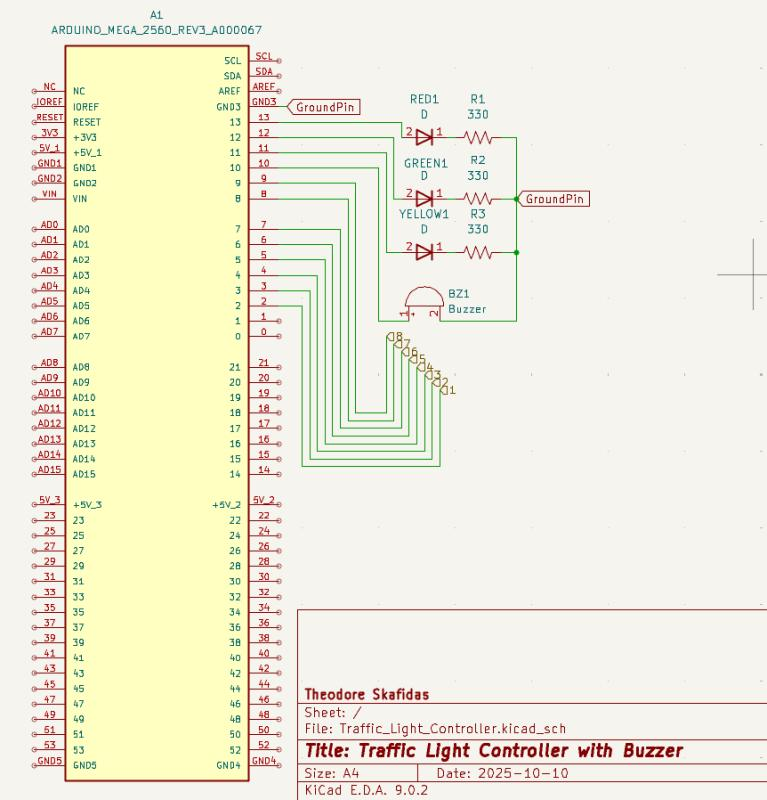
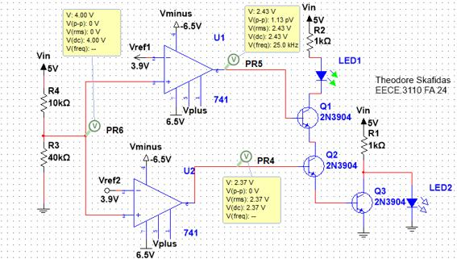

Full Project Portfolio
Reconfigurable Digital IC Test Fixture
Role: Component Procurement & Requirements Engineering
Managed component procurement and tracked all hardware assets using a comprehensive Bill of Materials (BOM) to ensure readiness for the final bench validation phase.

Project Files:
📄 View Project Report (PDF)Addressable LED Pixel Array Architecture
Overview:
Engineered the power distribution and network infrastructure for a custom addressable LED fixture. Utilized a QuinLED Dig-Quad controller and WLED firmware to drive 12V WS2818 strips, configuring the system to communicate over Ethernet with ELM (ENTTEC LED Mapper) lighting software. Successfully bench-tested the hardware to resolve power constraints and optimize network stability for seamless external lighting control.
Hardware Driven Dual-Mode Infinity Mirror
Overview:
Designed and engineered a hardware-driven infinity mirror utilizing an ADC0804 Analog-to-Digital Converter to manage a 40-LED array via NPN transistor switches.
Analog Circuit Design: Engineered a dual-mode input stage featuring an ambient-light responsive Sensor Mode (via an LDR) and a Predefined Pattern Mode. The pattern mode utilized a 555 timer configured as an astable multivibrator and an LM358 op-amp integrator to generate a continuous triangle wave.
Simulation & Fabrication: Verified the analog waveform generation and LM7805 voltage regulation using Multisim. Assembled the physical prototype on a protoboard, utilizing DIP sockets to prevent thermal damage to the logic ICs during the soldering process.
Hardware Troubleshooting: Conducted post-assembly diagnostics to isolate a suspected open circuit on the main board traces, applying systematic continuity testing to evaluate the physical wiring.
Project Files:
📄 View Project Report (PDF)High-Frequency Rectangular Waveguide Simulation
Overview:
Utilized Ansys HFSS to conduct 3D electromagnetic modeling and performance analysis of a rectangular waveguide optimized for high-frequency band operation.
Electromagnetic Simulation: Designed the physical geometry and configured accurate boundary conditions, material properties, and wave ports to simulate targeted RF behavior.
Performance Analysis: Extracted and analyzed S-parameters to evaluate insertion and return loss, and plotted field distributions to visualize mode propagation and ensure the structure met the specific frequency band requirements.
Project Files:
📄 View Project Report (PDF)Audio Driven Kinetic Sculpture
Overview:
Engineered a standalone embedded system on an Arduino Mega 2560 that dynamically controlled a DC motor based on real-time environmental audio.
Firmware Architecture: Implemented hardware timer interrupts to manage asynchronous timekeeping via a DS1307 RTC over I2C, ensuring the main non-blocking loop remained free for continuous sensor polling.
Signal Processing & Control: Developed a 50ms sampling window algorithm to filter analog microphone data, translating stable amplitude readings into dynamic PWM motor speed control via an L293D H-Bridge.
Hardware Debugging: Successfully identified and resolved critical integration issues, such as logic-level voltage mismatches on the I2C bus and state-machine ghosting on the 16x2 LCD display.

Arduino-Based Game Controller and Python Integration
Overview:
Engineered a custom hardware controller using an Arduino Mega 2560 to interface with a Python-based game application via bi-directional serial communication.
Hardware/Software Integration: Designed an event-driven, non-blocking C++ polling loop to read analog joystick inputs and an MPU-6500 gyroscope over I2C, translating them into low-latency game commands using the Python pyserial library.
Sensor Fusion & Debugging: Resolved a "return-to-center" directional bug by shifting from raw gyroscope velocity to calculating the sensor's absolute tilt angle (pitch and roll) to provide an intuitive control scheme.
Actuator Feedback: Configured a passive buzzer using software-generated square waves to provide immediate audio feedback triggered by in-game events.

Embedded Traffic Light Controller with Keypad Input
Overview:
Engineered an interactive traffic light controller using an ATmega2560 microcontroller, integrating a 4x4 matrix keypad and a passive buzzer.
Firmware Architecture: Designed a non-blocking finite-state machine (FSM) in C++ to manage simultaneous operations. This architecture handled a 1Hz hardware timer interrupt and continuous user input polling via the millis() function.
Mixed-Language Programming: Implemented inline AVR assembly for direct, low-level I/O manipulation to control LED states. Successfully resolved memory addressing faults by researching and applying the correct PORTB register addresses.
Hardware Debugging: Troubleshot and resolved software-to-hardware integration issues. This included converting DC voltage signals to square waves via the tone() function to properly drive the passive buzzer.

Analog Code Checker
Overview:
Engineered an analog circuit to verify specific resistor combinations using 741 operational amplifiers and bipolar junction transistors (BJTs).
Analog Logic Design: Configured op-amps as voltage comparators against a calculated reference voltage to evaluate resistor ratios.
Transistor Logic Gates: Utilized 2N3904 npn BJTs to construct hardware-level AND and NOT logic gates, successfully driving green and red LED indicators based on the comparator outputs.
Simulation & Testing: Validated the theoretical design in Multisim and tested the physical breadboard assembly using a bench-top DMM and dual power supply. Evaluated the final circuit, documenting design improvements for ratio-based versus absolute value checking.
